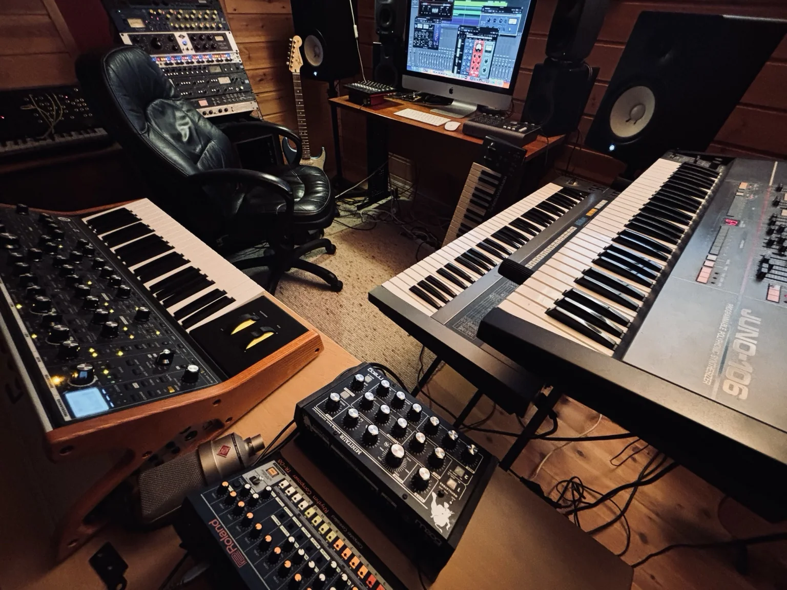
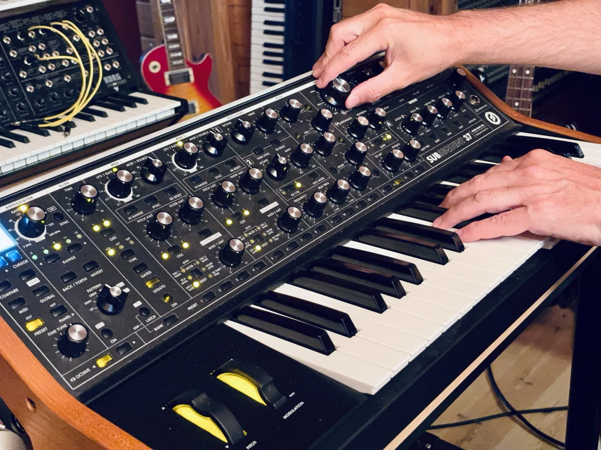
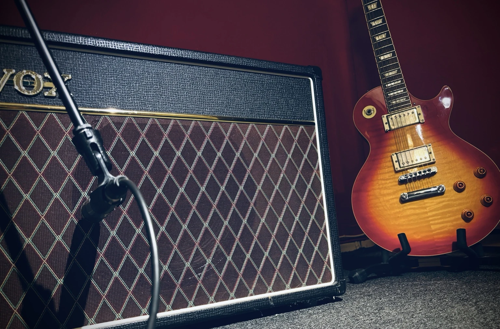

Få hjelp med hele låten eller akkurat den delen du trenger. Fredrikstad Studio følger prosjektet fra idé, tekst eller demo til en ferdig produksjon du kan være stolt av.
Hele veien eller ett steg
Hele prosessen – eller ett steg.
Vi setter sammen riktig prosess rundt prosjektet ditt, fra musikalsk utvikling og innspilling til ferdige publiseringsfiler.
Fra låtskriving og arrangement til ferdig miks og master – bygget rundt artistens idé, stemme og uttrykk.
Låtskriving og komposisjon
Arrangement og musikalsk utvikling
Beats, instrumentaler og backingtracks
Vokal- og instrumentinnspilling
Vokalproduksjon og kreativ regi
Redigering, miksing og mastering
Singler, EP-er og albumprosjekter
Helhetlig lydproduksjon som gir stemmen en tydelig, profesjonell og behagelig presentasjon.
Podcastinnspilling
Redigering og lydforbedring
Intro, outro og bakgrunnsmusikk
Voiceover og fortelleropptak
Ferdige filer klare for publisering
Musikk og lyd som gir bedrifter, organisasjoner og digitale produksjoner en egen identitet.
Jingler og lydlogoer
Reklamemusikk
Musikk og lyd til video
Lydproduksjon for bedrifter og organisasjoner
Kreative lydkonsepter til digitale medier

Slik kan vi arbeide
Fra første tanke til ferdig resultat.
Prosessen tilpasses låten, ambisjonsnivået og hvor langt du allerede har kommet.
01
Retning
Vi avklarer uttrykk, referanser, mål og hva prosjektet trenger.
02
Utvikling
Låt, arrangement, beat og musikalske detaljer formes.
03
Innspilling
Vokal og instrumenter spilles inn med kreativ og tydelig regi.
04
Ferdigstilling
Redigering, miks og mastering samler uttrykket til en ferdig produksjon.


Utgivelse
Vil du ha musikken din ut?
Ved større produksjonsprosjekter kan Fredrikstad Studio også hjelpe deg med å få musikken ut på digitale plattformer som Spotify, Apple Music, TIDAL, YouTube og TikTok – uten ekstra kostnad.
Studioet og utstyret
Utstyr som støtter musikken.
Fredrikstad Studio har et godt og fleksibelt produksjonsmiljø med kvalitetsmikrofoner og preamper, piano, synther, gitarer, bass, forsterkere, monitorering, plugins og profesjonelle produksjonsverktøy. Utstyret velges ut fra hva låten, stemmen og det musikalske uttrykket trenger.